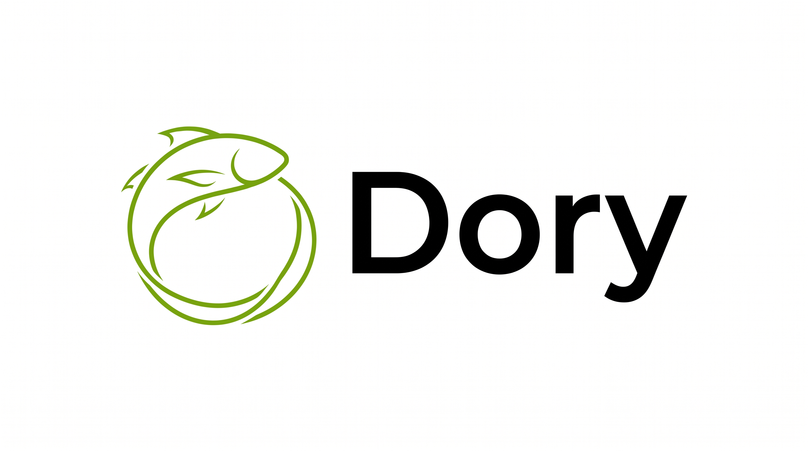
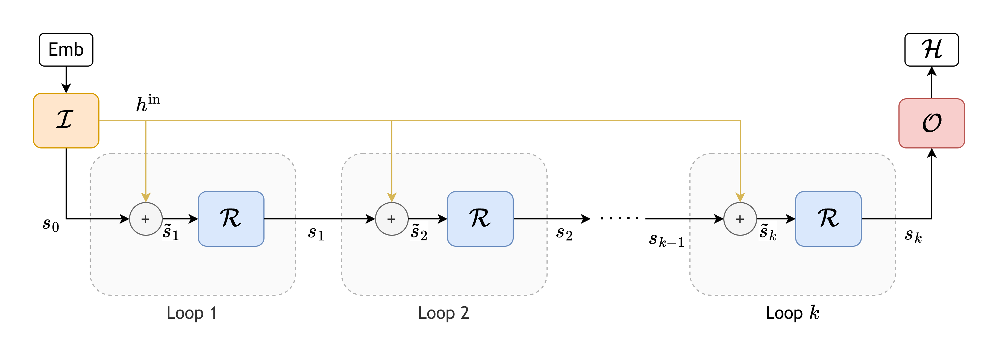
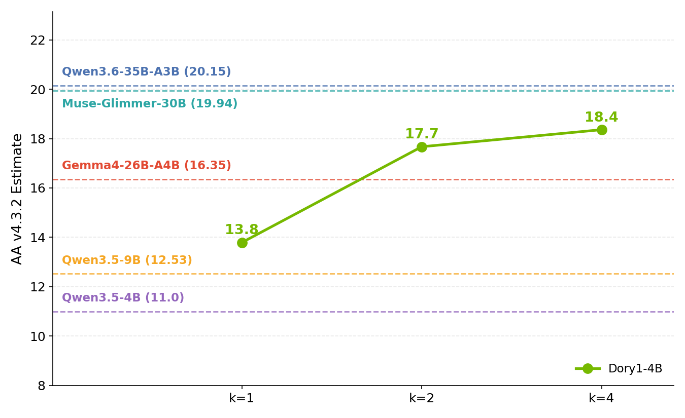
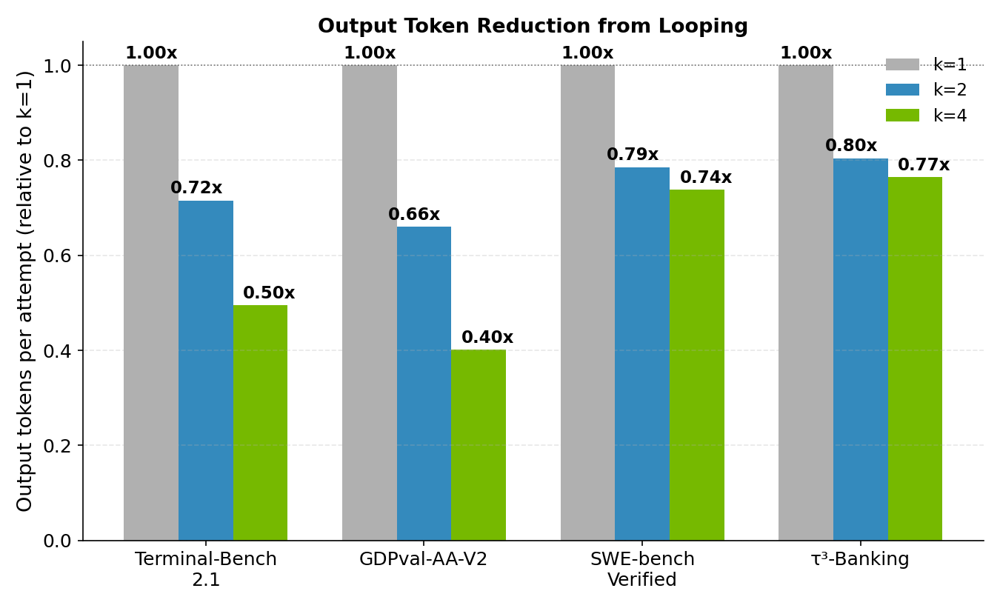

NVIDIA-Nemotron-Labs-Dory1.0-4B-BF16

Model Summary
| Total Parameters | 4B |
| Architecture | Looped (latent-recurrent) normalized-GPT with interleaved sliding-window attention (SWA) and full-attention layers |
| Precision | BF16 |
| Context Length | Up to 256K tokens |
| Supported Languages | English |
| Best For | General-purpose reasoning on a small footprint |
| License | OpenMDW License Agreement, version 1.1 |
| Release Date | October 16, 2026 |
NVIDIA-Nemotron-Labs-Dory1.0-4B-BF16 is a looped (latent-recurrent) large language model (LLM) trained by NVIDIA. The model employs a normalized-GPT architecture with interleaved hybrid sliding window attention (SWA) and full attention layers. By repeatedly applying a shared block of layers, Dory1.0-4B can spend more compute per token allowing it to scale intelligence. This model is ready for commercial or non-commercial use.

<em>Dory (Looped LM) Architecture: The layer stack is divided into three groups: Input (I), Recurrent (R) and Output (O). The shared Recurrent block (R) is applied multiple times between the Input and Output blocks, and the input is reinjected into every loop. In Dory, the Input and Output blocks have 8 layers each, while the Recurrent block has 20 layers.</em>
Highlights
- Elastic Inference Compute: A single checkpoint serves different inference compute budgets. By changing how many times the shared block of layers is applied, you can trade inference compute for accuracy to suit each task, with no retraining and no model swap.
- Token Efficiency: With looping, the model needs fewer generated tokens to solve a task. Extra computation per token goes into thinking in latent space rather than into longer outputs.
- Memory-Efficient Looping: Standard looping shares parameters across loops but still stores a separate KV cache for each one, so memory grows with every added loop. Dory supports last-loop KV caching, which keeps a single cache per recurrent attention layer. When enabled, Dory carries no KV-cache overhead relative to an equivalent non-looped model, regardless of the inference loop count.
- Native NVFP4 Pre-training: Built on a normalized-GPT (nGPT) backbone, Dory is pre-trained natively in NVFP4, NVIDIA's 4-bit floating-point format, before continuing in BF16.
- Multiple Formats: The model is available in BF16, MXFP8, NVFP4 and Q5_K_M formats.
License/Terms of Use
Governing Download Terms: Use of this model is governed by the OpenMDW-1.1 model license.
Benchmarks
<table> <thead> <tr> <th rowspan="2" align="left">Task</th> <th colspan="3" align="center">Dory1.0-4B</th> <th rowspan="2">Qwen3.5-4B</th> <th rowspan="2">Qwen3.5-9B</th> <th rowspan="2">Gemma 4 26B A4B</th> <th rowspan="2">Qwen3.6-35B-A3B</th> </tr> <tr> <th>1 loop</th> <th>2 loops</th> <th>4 loops</th> </tr> </thead> <tbody> <tr> <td colspan="8"><b>Coding & Agentic</b></td> </tr> <tr> <td>SciCode</td> <td align="center">27.3</td> <td align="center">34.94</td> <td align="center">35.11</td> <td align="center">25.82</td> <td align="center">28.21</td> <td align="center">40.32</td> <td align="center">37.24</td> </tr> <tr> <td>SWE-bench Verified</td> <td align="center">50.3</td> <td align="center">59.5</td> <td align="center">61.8</td> <td align="center">54.7</td> <td align="center">61</td> <td align="center">57.40</td> <td align="center">73.4†</td> </tr> <tr> <td>Terminal-Bench 2.1</td> <td align="center">12.5</td> <td align="center">18.1</td> <td align="center">22.2</td> <td align="center">15</td> <td align="center">24</td> <td align="center">35</td> <td align="center">43</td> </tr> <tr> <td>τ³-bench (Banking)</td> <td align="center">11.6</td> <td align="center">12.89</td> <td align="center">14.69</td> <td align="center">5.03</td> <td align="center">7.22</td> <td align="center">13.66</td> <td align="center">9.54</td> </tr> <tr> <td>GDPval-AA-V2 (Elo)</td> <td align="center">815</td> <td align="center">946</td> <td align="center">967</td> <td align="center">424</td> <td align="center">546</td> <td align="center">751.6</td> <td align="center">987</td> </tr> <tr> <td colspan="8"><b>Reasoning</b></td> </tr> <tr> <td>GPQA Diamond (no tools)</td> <td align="center">69.19</td> <td align="center">72.41</td> <td align="center">72.16</td> <td align="center">77.71</td> <td align="center">80.93</td> <td align="center">80.43</td> <td align="center">85.35</td> </tr> <tr> <td>HLE (text-only, no tools)</td> <td align="center">8.25</td> <td align="center">10.89</td> <td align="center">10.43</td> <td align="center">11.31</td> <td align="center">15.43</td> <td align="center">17.79</td> <td align="center">19.18</td> </tr> <tr> <td colspan="8"><b>Instruction Following</b></td> </tr> <tr> <td>IFBench</td> <td align="center">74.29</td> <td align="center">77.94</td> <td align="center">79</td> <td align="center">53.83</td> <td align="center">59</td> <td align="center">77.89</td> <td align="center">57.44</td> </tr> <tr> <td colspan="8"><b>Long Context</b></td> </tr> <tr> <td>AA-LCR</td> <td align="center">63</td> <td align="center">71</td> <td align="center">73</td> <td align="center">64.7</td> <td align="center">68.4</td> <td align="center">64.6</td> <td align="center">68.5</td> </tr> <tr> <td colspan="8"><b>General Knowledge</b></td> </tr> <tr> <td>AA-Omniscience (accuracy)</td> <td align="center">10.03</td> <td align="center">10.08</td> <td align="center">10.03</td> <td align="center">15.02</td> <td align="center">18.05</td> <td align="center">21.13</td> <td align="center">19.95</td> </tr></tbody> </table>
<em>Accuracy numbers measured by NVIDIA under a consistent harness (NeMo Gym / Nemo Evaluator SDK). Terminal-Bench 2.1 uses the Terminus-2 harness for all models. † Reported scores.</em>

<em>AA v4.3.2 scores are internal estimates computed under a consistent evaluation harness and may deviate from official Artificial Analysis (AA) scores.</em>
<sub> (1) <b>AA-LCR:</b> We use the corrected answer keys (from AA-LCR v1.1) but keep the older judge (Qwen3-235B-A22B) instead of GPT-5.6 Luna.
(2) <b>GDPval-AA v2:</b> Elo ratings of selected reference models (out of 12): DeepSeek-V4-Pro (1223), Qwen3.6-35B-A3B (992), Qwen3.5-122B-A10B (925), gpt-oss-120b (745).
(3) <b>Repeats:</b> Number of repeated runs per benchmark: AA-Briefcase-Lite (1), GDPval-AA v2 (1), AutomationBench-AA (1), Terminal-Bench 4.0 (1), SciCode (8), Humanity's Last Exam (1), GDP.pdf text-only (5), AA-Omniscience (10), AA-LCR (16). </sub>

<em>Looping is token-efficient. As the loop count increases, the model solves the same tasks with fewer generated tokens.</em>
Quick Start Guide
vLLM
Note: Dory support in vLLM is under review in vllm-project/vllm#60149. Until it is included in a vLLM release, install vLLM from that PR:
shellVLLM_USE_PRECOMPILED=1 pip install "git+https://github.com/vllm-project/vllm.git@refs/pull/60149/head"
VLLM_USE_PRECOMPILED=1 reuses compatible prebuilt vLLM kernels, avoiding local CUDA compilation. This section will be updated once a vLLM release supports Dory.
Launch the Server
shellvllm serve --model nvidia/NVIDIA-Nemotron-Labs-Dory1.0-4B-BF16 \ --hf-overrides '{"n_recurrent_loops": 2, "recurrent_kv_cache_mode": "per_loop"}' \ --max-model-len 262144 \ --max-num-seqs 128 \ --enable-prefix-caching \ --async-scheduling \ --reasoning-parser nemotron_v3 \ --tool-call-parser qwen3_coder \ --enable-auto-tool-choice
Validated context: 256K tokens. Lower --max-model-len if you are memory-constrained or want more KV-cache headroom at higher concurrency.
Choosing the Loop Count
We recommend two loops as the default starting point for a good balance between accuracy and compute. Most of the accuracy gain from looping comes from the second loop, with smaller gains beyond that (see the loop-count comparison).
Use one loop when minimizing compute per token is the priority. Consider four loops when additional accuracy matters more, particularly for agentic tasks such as Terminal-Bench and SWE-bench (see benchmark results). Because higher loop counts can also reduce the number of generated tokens, evaluate the end-to-end latency and cost on your workload when choosing a setting.
To use a different loop count, update n_recurrent_loops in --hf-overrides in the command above.
Reducing the KV Cache Memory Overhead
The command above uses per-loop caching, which stores a separate KV cache for each recurrent loop, so KV cache memory grows with the loop count. Last-loop KV caching instead keeps a single cache per recurrent attention layer where each loop overwrites the previous loop's entries, so the cache holds only the final loop's keys and values. This keeps the KV cache footprint at the one-loop size for any loop count, leaving more capacity for longer contexts or concurrent requests.
To enable it, set recurrent_kv_cache_mode to "last_loop". In our experiments, the accuracy with last-loop caching stays close to the per-loop mode with nearly unchanged output lengths.
llama.cpp
Note: Dory support in llama.cpp is available in ggml-org/llama.cpp#30306. Until it is included in a llama.cpp release, build from the Dory-enabled source below. This example pins revision 98a74c97ea09ac72f6ceda1559808fc0a2f447ce, used by the local macOS reference setup, rather than following the moving PR head.
Build on Apple Silicon
These commands target native ARM64 macOS on Apple Silicon, not Intel or Rosetta. Install Homebrew and Apple's Command Line Tools (xcode-select --install) first.
shellbrew install cmake openssl@3 git init llama.cpp-dory cd llama.cpp-dory git remote add origin https://github.com/brianchmielNV/llama.cpp.git git fetch --depth 1 origin 98a74c97ea09ac72f6ceda1559808fc0a2f447ce git checkout --detach FETCH_HEAD HF_UI_VERSION=b11551 cmake -S . -B build \ -DCMAKE_BUILD_TYPE=Release \ -DCMAKE_OSX_ARCHITECTURES=arm64 \ -DCMAKE_OSX_SYSROOT="/Library/Developer/CommandLineTools/SDKs/MacOSX26.sdk" \ -DGGML_METAL=ON -DGGML_METAL_EMBED_LIBRARY=ON \ -DGGML_BLAS=ON -DGGML_BLAS_VENDOR=Apple \ -DLLAMA_BUILD_SERVER=ON \ -DLLAMA_BUILD_TESTS=OFF -DLLAMA_BUILD_EXAMPLES=OFF -DLLAMA_BUILD_APP=OFF \ -DLLAMA_BUILD_UI=OFF -DLLAMA_USE_PREBUILT_UI=ON \ -DLLAMA_OPENSSL=ON -DOPENSSL_ROOT_DIR="$(brew --prefix openssl@3)" cmake --build build --parallel 4 --target llama-server
The build uses Metal and a prebuilt browser UI; no Python environment or JavaScript build is required to run the server.
Download the GGUF Checkpoint
llama.cpp loads GGUF files rather than the BF16 Hugging Face checkpoint directly. Download the reference dory-q5_k_m.gguf export (Q5_K_M) in your browser and place it in llama.cpp-dory/. This is a quantized export; the benchmark results above are for BF16.
The expected file size is 3,673,288,864 bytes. Verify its SHA-256 checksum before launching:
shellecho "96080be49ffd67b916018b7bdef8c484762576fb52780e10ab98ac4978a660e0 dory-q5_k_m.gguf" | shasum -a 256 -c -
Launch the Server
From llama.cpp-dory/, start a local server with two loops and reasoning enabled:
shell./build/bin/llama-server \ -m ./dory-q5_k_m.gguf \ --alias dory \ --host 127.0.0.1 --port 8080 \ -ngl 999 \ --ctx-size 4096 --parallel 1 \ --batch-size 512 --ubatch-size 512 \ --cache-type-k f16 --cache-type-v f16 \ --flash-attn off \ --no-context-shift \ --jinja --reasoning on \ --temp 1.0 --top-p 0.95 --top-k 0 --min-p 0 --repeat-penalty 1 \ --override-kv "dory.num_loops=int:2,dory.recurrent_kv_cache_mode=str:per_loop"
Once the server is ready, open http://127.0.0.1:8080 on the same Mac for the chat interface. The server is local-only and unauthenticated. Its OpenAI-compatible API is at http://127.0.0.1:8080/v1, with model identifier dory from --alias.
Loop Count and KV Cache
Set dory.num_loops in --override-kv to 1, 2, 3, or 4. As with vLLM, start with two loops, use one loop to minimize compute per token, or consider four loops when accuracy matters more.
The command above uses per-loop KV caching. To keep the KV cache footprint at the one-loop size, replace its --override-kv argument with:
shell--override-kv "dory.num_loops=int:2,dory.recurrent_kv_cache_mode=str:last_loop"
API Client
The examples below use the OpenAI-compatible client. Recommended sampling settings are Temperature 1.0 and Top_P 0.95. Reasoning is always on in vLLM and enabled with --reasoning on in the llama.cpp command above. Choose the client configuration for your server before running the examples.
vLLM registers the model under the identifier passed to --model (nvidia/NVIDIA-Nemotron-Labs-Dory1.0-4B-BF16) since --served-model-name is not set. If you add a --served-model-name of your own, copy the identifier returned by GET /v1/models into MODEL below.
pythonfrom openai import OpenAI client = OpenAI(base_url="http://localhost:8000/v1", api_key="EMPTY") MODEL = "nvidia/NVIDIA-Nemotron-Labs-Dory1.0-4B-BF16" MAX_TOKENS = 16000
For llama.cpp, use port 8080 and the dory alias instead. The smaller output limit below leaves room for the prompt in the 4,096-token context; always keep prompt, history, and generated tokens within --ctx-size.
pythonfrom openai import OpenAI client = OpenAI(base_url="http://127.0.0.1:8080/v1", api_key="EMPTY") MODEL = "dory" MAX_TOKENS = 2048
Chat
pythonresponse = client.chat.completions.create( model=MODEL, messages=[{"role": "user", "content": "Write a haiku about GPUs"}], max_tokens=MAX_TOKENS, temperature=1.0, top_p=0.95, ) print(response.choices[0].message.content)
Streaming
pythonstream = client.chat.completions.create( model=MODEL, messages=[{"role": "user", "content": "Explain how a transformer works in two sentences"}], max_tokens=MAX_TOKENS, temperature=1.0, top_p=0.95, stream=True, ) for chunk in stream: print(chunk.choices[0].delta.content or "", end="", flush=True)
Tool Calling
For vLLM, add the following to any serve command above:
shell--enable-auto-tool-choice \ --tool-call-parser qwen3_coder \ --reasoning-parser nemotron_v3
For llama.cpp, the launch command already includes --jinja for chat-template-based tool calling; the vLLM parser flags above are not needed.
NOTE: For coding agents, add extra_body={"chat_template_kwargs": {"force_nonempty_content": True}} to the API call, as shown below.
pythontools = [{ "type": "function", "function": { "name": "get_weather", "description": "Get the current weather for a city", "parameters": { "type": "object", "properties": {"city": {"type": "string"}}, "required": ["city"], }, }, }] response = client.chat.completions.create( model=MODEL, messages=[{"role": "user", "content": "What's the weather in Santa Clara?"}], tools=tools, max_tokens=MAX_TOKENS, temperature=1.0, top_p=0.95, extra_body={"chat_template_kwargs": {"force_nonempty_content": True}}, ) print(response.choices[0].message.tool_calls)
Deployment Geography: Global
Model Architecture
- Architecture Type: Looped (latent-recurrent) normalized-GPT
- Network Architecture: Looped (latent-recurrent) normalized-GPT with interleaved sliding-window attention (SWA) and full-attention layers
- Number of model parameters: 4B
Model Design
The model was pre-trained with 6T tokens, using NVFP4 for the first ~4.5T tokens and BF16 for the remainder, followed by a context-extension phase of 300B tokens. It supports up to 256K context length.
Training Methodology
Stage 1: Pre-Training
- NVIDIA-Nemotron-Labs-Dory1.0-4B-BF16 model was pre-trained on 6T tokens using NVFP4 for the first ~4.5T tokens and BF16 for the remainder, with crawled and synthetic code, math, science, and general knowledge data.
- The context length was extended to 256K tokens over 300B tokens.
- Software used for pre-training: Megatron-LM
Stage 2: Supervised Fine-Tuning
- The model was further fine-tuned on an NVIDIA-curated SFT dataset.
Stage 3: Reinforcement Learning
- The model underwent multi-environment reinforcement learning using GRPO (Group Relative Policy Optimization) across math, code, science, instruction following, multi-step tool use, multi-turn conversations, and structured output environments. It utilized an asynchronous RL architecture that decouples training from inference.
- Software used for reinforcement learning: NeMo RL, NeMo Gym
NVIDIA-Nemotron-Labs-Dory1.0-4B-BF16 is a result of the above work.
Input
- Input Type(s): Text
- Input Format(s): String
- Input Parameters: One-Dimensional (1D): Sequences
- Other Properties Related to Input: Maximum context length up to 256K tokens. Supported language: English.
Output
- Output Type(s): Text
- Output Format: String
- Output Parameters: One-Dimensional (1D): Sequences
- Other Properties Related to Output: Maximum context length up to 256K tokens
Our AI models are designed and/or optimized to run on NVIDIA GPU-accelerated systems. By leveraging NVIDIA's hardware (e.g. GPU cores) and software frameworks (e.g., CUDA libraries), the model achieves faster training and inference times compared to CPU-only solutions.
Software Integration
- Runtime Engine(s): PyTorch
- Supported Hardware Microarchitecture Compatibility: NVIDIA Hopper; NVIDIA Blackwell
- Preferred/Supported Operating System(s): Linux
The integration of foundation and fine-tuned models into AI systems requires additional testing using use-case-specific data to ensure safe and effective deployment. Following the V-model methodology, iterative testing and validation at both unit and system levels are essential to mitigate risks, meet technical and functional requirements, and ensure compliance with safety and ethical standards before deployment.
Model Version(s)
- GA (10/16/2026)
Training, Testing, and Evaluation Datasets
Training
Data Modality: Text Training Data Size: 6 Trillion Tokens for pre-training; 300 Billion Tokens for context extension Dataset partition: Training [100%], testing [0%], validation [0%] Time period for training data collection: 2013 to December 2025 Time period for testing data collection: 2013 to December 2025 Time period for validation data collection: 2013 to December 2025 Data Collection Method by dataset: Hybrid: Automated, Manually-Collected, Synthetic Labeling Method by dataset: Hybrid: Automated, Manually-Labeled, Synthetic
NVIDIA-Nemotron-Labs-Dory1.0-4B-BF16 is pre-trained on a large corpus of high-quality curated and synthetically-generated data. It is trained in the English language and 43 programming languages. Our sources cover a variety of document types such as: webpages, dialogue, articles, and other written materials. The corpus spans domains including legal, math, science, finance, and more. We also include a small portion of question-answering, and alignment style data to improve model accuracy. The model was pre-trained for 6 trillion tokens, followed by 300 billion tokens of context extension.
The post-training corpus for NVIDIA-Nemotron-Labs-Dory1.0-4B-BF16 consists of high-quality curated and synthetically-generated data. The primary language used for post-training is English.
These datasets, such as FinePDFs, EssentialWeb, HotpotQA, SQuAD, and HelpSteer3, do not collectively or exhaustively represent all demographic groups (and proportionally therein). For instance, these datasets do not contain explicit mentions of demographic classes such as age, gender, or ethnicity in 64-99% of samples, depending on the source. In the subset where such terms are present, document-based datasets (FinePDFs and EssentialWeb) contain representational skews, such as references to "male" outnumbering those to "female", and mentions of "White" as the most frequent among ethnic identifiers (comprising 43-44% of ethnicity mentions). To mitigate these imbalances, we recommend considering evaluation techniques such as bias audits, fine-tuning with demographically balanced datasets, and mitigation strategies like counterfactual data augmentation to align with the desired model behavior. This evaluation used a 3,000-sample subset per dataset, identified as the optimal threshold for maximizing embedder accuracy.
During post-training, we generate synthetic data by distilling trajectories and solutions from strong teacher models and agent systems, often grounded in real tasks or documents and aggressively filtered for quality. For math, code, and science, we start from curated problem sets and use open source permissive models such as GPT-OSS-120B to produce step-by-step reasoning traces, candidate solutions, best-of-n selection traces, and verified CUDA kernels. For long-context and science, we build synthetic QA and reasoning data by retrieving passages from long documents, generating MCQ/OpenQA questions and answers, and paraphrasing them into multiple prompt/response formats to ensure diversity. Across all pipelines we stack automated verification—compilers, numerical checks, language identification—to ensure our data is high quality.
For all domains, we apply a unified data filtering pipeline to ensure that only high-quality, license-compliant, and verifiable samples are used for post-training. We first discard malformed examples using structural checks (e.g., missing tool definitions when tool calls are present). We then aggressively filter reasoning traces exhibiting pathological repetition, such as repeated n-grams within a sliding window or across the entire trajectory, which we found to be a strong indicator of malformed or low-quality reasoning. Finally, based on internal audits of synthetically generated datasets, we observed that some teacher models occasionally produce reasoning traces and final responses that implicitly align with specific political entities or promote nationalistic narratives. To mitigate this, we apply targeted keyword- and regex-based filters and remove all trajectories matching such behavior.
For more information about the datasets used to train this model, please see the Public Summary of Training Content
For detailed dataset information on the pre-training and reinforcement-learning data, please see the NVIDIA-Nemotron-3.5-Lightning-30B-A3B-BF16 model card.
Testing Datasets:
Data Collection Method by dataset
- Hybrid: Automated, Manually-Collected, Synthetic
Labeling Method by dataset
- Hybrid: Automated, Manually-Labeled, Synthetic
Properties: This corpus comprises a mix of high-quality standard benchmarks and test suites for modern agentic AI. These benchmarks test model capabilities on tasks such as tool-calling and instruction following.
Evaluation Datasets:
Data Collection Method by dataset
- Hybrid: Automated, Manually-Collected, Synthetic
Labeling Method by dataset
- Hybrid: Automated, Manually-Labeled, Synthetic
Properties: This corpus comprises a mix of high-quality standard benchmarks and test suites for modern agentic AI. These benchmarks test model capabilities on tasks such as tool-calling and instruction following.
Inference
- Acceleration Engine: PyTorch
- Test Hardware:
- NVIDIA Hopper
- H100
- NVIDIA Blackwell
- B200
- B300
- DGX Spark
Quantized Checkpoints
In addition to this BF16 checkpoint, quantized versions of Dory1.0-4B are available for lower memory use and faster inference:
- **NVIDIA-Nemotron-Labs-Dory1.0-4B-BF16**: 16-bit weights (W16A16).
- **NVIDIA-Nemotron-Labs-Dory1.0-4B-MXFP8**: 8-bit weights (W8A16).
- **NVIDIA-Nemotron-Labs-Dory1.0-4B-NVFP4**: 4-bit weights (W4A16).
- **NVIDIA-Nemotron-Labs-Dory1.0-4B-GGUF**: Q5_K_M export for llama.cpp.
DGX Spark Inference Performance
The table below reports measured inference speedups for Dory1.0-4B on NVIDIA DGX Spark relative to the BF16 baseline. MXFP8 (W8A16) uses 8-bit weights with 16-bit activations, while NVFP4 (W4A16) uses 4-bit weights with 16-bit activations.
| Input sequence length (ISL, tokens) | Output sequence length (OSL, tokens) | Batch size | MXFP8 (W8A16) speedup vs. BF16 | NVFP4 (W4A16) speedup vs. BF16 |
|---|---|---|---|---|
| 2560 | 300 | 1 | 1.69× | 2.17× |
| 128 | 1024 | 1 | 1.84× | 2.44× |
Ethical Considerations
NVIDIA believes Trustworthy AI is a shared responsibility and we have established policies and practices to enable development for a wide array of AI applications. Developers should work with their internal model team to ensure this model meets requirements for the relevant industry and use case and addresses unforeseen product misuse.
We advise against circumvention of any provided safety guardrails contained in the Model without a substantially similar guardrail appropriate for your use case. For more details: Safety and Explainability Subcards.
For more detailed information on ethical considerations for this model, please see the Model Card++ Bias, and Privacy Subcards.
Please report model quality, risk, security vulnerabilities or NVIDIA AI Concerns here.